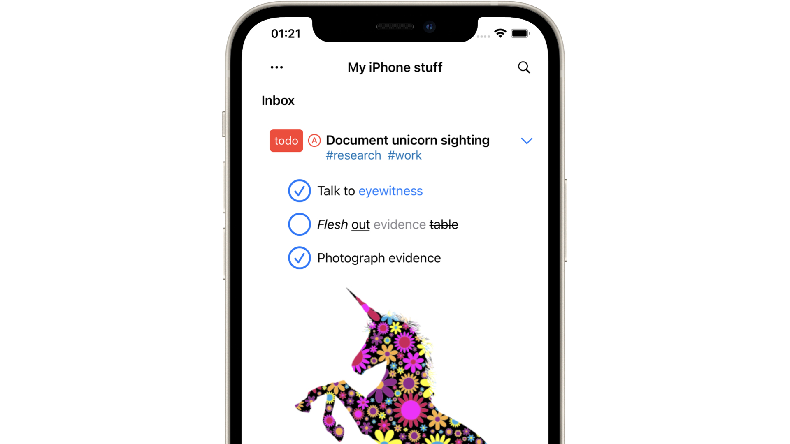

Plain Org

 Access org tasks from your iPhone
built with 💙 by me - powered by org 🦄
Access org tasks from your iPhone
built with 💙 by me - powered by org 🦄
Why?
Org mode on Emacs is wonderful. I'm a big fan and use it regularly on my laptop. As an iPhone user, I wanted quick access to org tasks while on the go... so I built Plain Org for iOS.
Features
- View and edit your org mode tasks while on the go.
- Beautifully rendered org markup.
- Sync your org files using your favorite cloud provider.
- Create new files.
- Outline-style editing with toolbar
- Keywords
- Indent
- Priority
- Tags
- Formatting: bold, italic, underline, strikethrough, verbatim, and code.
- Add links from Safari via share extension.
- Add new tasks via Spotlight.
- Reorder headings via drag/drop.
- Checkboxes
- Interactive toggling.
- Quickly reset multiple checkboxes.
- Follow local links.
- Show inline images.
- File-local keywords and visibility.
- Filter open/closed tasks.
- Show/hide stars.
- Edit raw text.
- Light/dark mode.
What is org?
Org is a powerful plain text markup, somewhat similar to markdown. It has a rich feature set. Being pure text, you can view and edit using your favourite text editor (Emacs, Vim, VSCode, etc.) while you're at your computer.
Here's a sample snippet:
#+TITLE: My iPhone stuff
* Inbox
** DONE [#A] Publish Plain Org to App Store :plainorg:
** NEXT [#B] Make [[https://xenodium.com/oatmeal-cookie-recipe][oatmeal cookies]] :cooking:
[[file:oats.jpg]]
** TODO [#A] Document unicorn sighting :research:truth:
- [X] Talk to eyewitness.
- [X] /Flesh/ _out_ ~evidence~ =table=
|-----------+----------------+----------|
| last seen | location | country |
|-----------+----------------+----------|
| 2017 | The Royal Mint | Scotland |
| 1991 | Harz Mountains | Germany |
|-----------+----------------+----------|
Syncing your data
Plain Org syncs data using iOS file-providing extensions. If your favorite cloud service offers an iOS extension, Plain Org should be able to open, edit, and sync your data.
Your mileage may vary creating new files or opening local links. These may not be possible with your cloud service's extension support.
Cloud provider support
|
View file |
Edit file |
New file |
Open local links |
| Dropbox |
○ |
○ |
○ |
|
| iCloud |
○ |
○ |
○ |
○ |
| Google Drive |
○ |
○ |
|
|
| Syncthing |
○ |
○ |
○ |
○ |
| Working Copy |
○ |
○ |
○ |
○ |
Enabling cloud syncing
See iOS's using third-party apps in Files to enable syncing data with your cloud service.
Feature requests
Browse r/plainorg for existing feature requests. Upvote existing or file a new one. You can also send feedback via Plain Org itself.
Free download
Plain Org is a paid app. Please help support its development if you can. Ping me if you need a free copy. Email me at "plainorg" + "@" + "xenodium.com".
Beta testing
Please help support Plain Org's development by purchasing from the App Store. If you're feeling adventurous and have tolerance for a few rough edges, you can also get access to earlier (beta builds). I'll need an email address to send a TestFlight invite. Ping me on reddit, twitter, or email me at "plainorg" + "@" + "xenodium.com".
Privacy policy
No personal data is sent to any server, as there is no server component to this app. There are neither third party server integrations, accounts, analytics, advertising, nor hidden trackers in this app. All your data is kept on your iPhone, unless you choose a cloud provider to sync or store your data. See your cloud provider's privacy policy for details on how they may handle it.